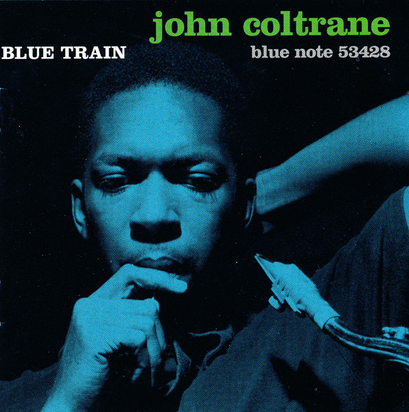
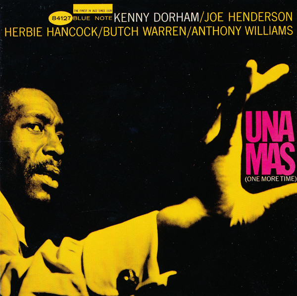

Blue Note Records

Contents
- History
- Early years
- Lion and Wolff embrace bebop
- Hard Bop and beyond
- The avant-garde
- Cover art
- Lion retires; Wolff dies
- Revival and ownership history
- Modern Era
- Legacy
- Documentary films
- Discography
- Subsidiaries
![]()
Blue Note Records is an American jazz record label owned by Universal Music Group and operated under Capitol Music Group.[1] Established in 1939 by Alfred Lion and Max Margulis, it derived its name from the blue notes of jazz and the blues. Originally dedicated to recording traditional jazz and small group swing, the label began to switch its attention to modern jazz around 1947. From there, Blue Note grew to become one of the most prolific, influential and respected jazz labels of the mid-20th century, noted for its role in facilitating the development of hard bop, post-bop and avant-garde jazz, as well as for its iconic modernist art direction.
History
Historically, Blue Note has principally been associated with the "hard bop" style of jazz (mixing bebop with other forms of music including soul, blues, rhythm and blues and gospel), but also recorded essential albums in the avant-garde and free styles of jazz. Horace Silver, Jimmy Smith, Freddie Hubbard, Lee Morgan, Art Blakey, Grant Green, Hank Mobley, Wayne Shorter, Bobby Hutcherson, and Jackie McLean were among the label's leading artists. During its heyday, the 1950s and 1960s, the photography and graphic art of Reid Miles created a series of iconic album covers, often incorporating session photos by Francis Wolff, which added to Blue Note's artistic reputation.
Early Years
Lion first heard jazz as a young boy in Berlin. He settled in New York City in 1937, and shortly after the first From Spirituals to Swing concert, recorded pianists Albert Ammons and Meade Lux Lewis in 1939 during a one-day session in a rented studio.[2] The Blue Note label initially consisted of Lion and Max Margulis, a communist writer who funded the project. The label's first releases were traditional "hot" jazz and boogie woogie, and the label's first hit was a performance of "Summertime" by soprano saxophonist Sidney Bechet, which Bechet had been unable to record for the established companies.[2] Musicians were supplied with alcoholic refreshments, and recorded in the early hours of the morning after their evening's work in clubs and bars had finished. The label soon became known for treating musicians uncommonly well—setting up recording sessions at congenial times, and allowing the artists to be involved in all aspects of the record's production.
Francis Wolff, a professional photographer, emigrated to the US at the end of 1939 and soon joined forces with Lion, a childhood friend.[2] In 1941, Lion was drafted into the army for two years. Milt Gabler at the Commodore Music Store offered storage facilities and helped keep the catalog in print, with Wolff working for him. By late 1943, the label was back in business recording musicians and supplying records to the armed forces. Willing to record artists that most other labels would consider to be uncommercial, in December 1943 the label initiated more sessions with artists such as pianist Art Hodes, trumpeter Sidney DeParis, clarinetist Edmond Hall, and Harlem stride pianist James P. Johnson,[2] who was returning to a high degree of musical activity after having largely recovered from a stroke suffered in 1940.
Lion and Wolff embrace bebop
Towards the end of the war, saxophonist Ike Quebec was among those who recorded for the label.[2] Quebec would act as a talent scout for the label until his death in 1963.[3] Although stylistically belonging to a previous generation, he could appreciate the new bebop style of jazz, the creation of which is usually attributed to Dizzy Gillespie and Charlie Parker.
In 1947, pianist Thelonious Monk recorded his first sessions as a leader for the label, which were also the Blue Note debut of drummer Art Blakey, who also recorded his first session as leader for the label at this time.[2] Lion recorded several Monk sessions before he began to release the resulting sides. Monk's recordings for Blue Note between 1947 and 1952 did not sell well for some years, but have since come to be regarded as the most important of his career. Other bebop or modernist musicians who recorded for Blue Note during the late 1940s and early 1950s were pianist Tadd Dameron, trumpeters Fats Navarro and Howard McGhee, saxophonist James Moody and pianist Bud Powell.[2] The sessions by Powell are commonly ranked among his best. J. J. Johnson and trumpeter Miles Davis both recorded several sessions for Blue Note between 1952 and 1954, but by then the musicians who had created bebop were starting to explore other styles.
The recording of musicians performing in an earlier jazz idiom, such as Sidney Bechet and clarinettist George Lewis, continued into the 1950s.
Hard bop and beyond
In 1951, Blue Note issued their first vinyl 10" releases. The label was soon recording emerging talent such as Horace Silver (who would stay with Blue Note for a quarter of a century) and Clifford Brown. Meanwhile, Milt Jackson (as the leader of what became the Modern Jazz Quartet) and the Jazz Messengers (originally organised as a cooperative, but soon to become Art Blakey's group) recorded for Blue Note. The Milt Jackson Quartet session was a one-off, but Blakey's various groups recorded for the label extensively, if intermittently, for the next decade. Rudy Van Gelder recorded most Blue Note releases from 1953, after Lion and Van Gelder's mutual friend, saxophonist and composer Gil Melle, introduced them.[2] A difference between Blue Note and other independent labels (for example Prestige Records, who also employed Van Gelder) was that musicians were paid for rehearsal time prior to the recording session: this helped ensure a better end result on the record. Producer Bob Porter of Prestige Records once said that "The difference between Blue Note and Prestige is two days' rehearsal.[4] When the recording industry switched to 12" LP in the mid-1950s, Blue Note was in difficulties. Their catalog on the now outmoded 10" LP now had to be recreated on the newer format. Lion contemplated selling out to Atlantic at this time, an option which was not acted upon. A musician who was to become one of the label's best sellers was discovered. Jimmy Smith, the Hammond organist was signed in 1956,[2] and performed on the label's first 12" LP album of new recordings.
The mid-to-late 1950s saw debut recordings for Blue Note by (among others) Hank Mobley, Lee Morgan, Herbie Nichols, Sonny Clark, Kenny Dorham, Kenny Burrell, Jackie McLean, Donald Byrd and Lou Donaldson. Sonny Rollins recorded for the label in 1956 and 1957 and Bud Powell briefly returned. John Coltrane's Blue Train, and Cannonball Adderley's Somethin' Else (featuring Miles Davis in one of his last supporting roles) were guest appearances on the label. Blue Note was by then recording a mixture of established acts (Rollins, Adderley) and artists who in some cases had recorded before, but often produced performances for the label which by far exceeded earlier recordings in quality (Blue Train is often considered to be the first significant recording by Coltrane as a leader). Horace Silver and Art Blakey and the Jazz Messengers continued to release a series of artistically and commercially successful recordings.
The early 1960s saw Dexter Gordon join the label.[2] Gordon was a saxophonist from the bebop era who had spent several years in prison for narcotic offences, and he made several albums for Blue Note over a five-year period, including several at the beginning of his sojourn in Europe. Gordon also appeared on the debut album by Herbie Hancock - by the mid 1960s, all four of the younger members of the Miles Davis quintet (Hancock, Wayne Shorter, Ron Carter and Tony Williams) were recording for the label, and Hancock and Shorter in particular produced a succession of superb albums in a mix of styles. Carter did not actually record under his own name until the label's revival in the 1980s, but played double bass on many other musicians' sessions. Many of these also included Freddie Hubbard, a trumpeter who also recorded for the label as a leader. One of the features of the label during this period was a "family" of musicians (Hubbard, Hancock, Carter, Grant Green, Joe Henderson, Kenny Dorham, Lee Morgan, Blue Mitchell, Hank Mobley and many others) who would record as sidemen on each other's albums without necessarily being part of the leader's working group.
The early 1960s also saw three Blue Note recordings by pianist/composer Freddie Redd, one of which, The Connection, used music written for the play by Jack Gelber and its film version.
In 1963, Lee Morgan scored a significant hit with the title track of The Sidewinder album,[2] and Horace Silver did the same the following year with Song for My Father. As a result, Lion was under pressure by independent distributors to come up with similar successes, with the result that many Blue Note albums of this era start with a catchy tune intended for heavy airplay in the United States.
At the end of the 1950s, and in the early 1960s, Blue Note headquarters were located in New York City, at West 61st Street,[5][6][7] and at 47 W 63rd Street.[8]
The avant-garde
Although many of the acts on Blue Note were recording jazz for a wide audience, the label also documented some of the emerging avant-garde and free jazz players. Andrew Hill,[2] a highly individual pianist, made many albums for the label, one featuring multi-instrumentalist Eric Dolphy. Dolphy's Out to Lunch! (featuring a celebrated cover by Reid Miles) is perhaps his best-known album. Saxophonist Ornette Coleman released two albums recorded with a trio in a Stockholm club, and three studio albums (including The Empty Foxhole, with his then ten-year-old son Denardo Coleman on drums). Pianist Cecil Taylor recorded a brace of albums for Blue Note, as did trombonist Grachan Moncur III, and saxophonist Sam Rivers, drummer Tony Williams, vibraphonist Bobby Hutcherson and organist Larry Young also recorded albums which diverged from the "hard bop" style usually associated with the label.[2]
Saxophonist Jackie McLean, a stalwart of the label's hard bop output since the late 1950s, also crossed over into the avant-garde in the early 1960s, whose notable avant-garde albums included One Step Beyond, Destination Out and on (as a side man) trombonist Grachan Moncur III's "Evolution".
Though these avant-garde records did not sell as well as some other Blue Note releases, Lion thought it was important to document new developments in jazz.
Cover art
In 1956, Blue Note employed Reid Miles, an artist who worked for Esquire magazine.[2] The cover art produced by Miles, often featuring Wolff's photographs of musicians in the studio, was as influential in the world of graphic design as the music within would be in the world of jazz.[9] Under Miles, Blue Note was known for their striking and unusual album cover designs.[2] Miles' graphical design was distinguished by its tinted black and white photographs, creative use of sans-serif typefaces, and restricted color palette (often black and white with a single color), and frequent use of solid rectangular bands of color or white, influenced by the Bauhaus school of design.[10]
Though Miles' work is closely associated with Blue Note and has earned iconic status and frequent homage, Miles was only a casual jazz fan, according to Richard Cook;[11] Blue Note gave him several copies of each of the many dozens of albums he designed, but Miles gave most to friends or sold them to second-hand record shops. A few mid-1950s album covers featured drawings by a then-unknown Andy Warhol.[12]
Some of his most celebrated designs adorned the sleeves of albums such as Midnight Blue, Out to Lunch!, Unity, Somethin' Else, Let Freedom Ring, Hub-Tones, No Room for Squares, Cool Struttin', and The Sidewinder.
Lion retires; Wolff dies
Blue Note was acquired by Liberty Records in 1965 and Lion, who had difficulties working within a larger organization, retired in 1967.[2] Reid Miles' association with the label ended around this time. For a few years most albums were produced by Wolff or pianist Duke Pearson, who had succeeded Ike Quebec in A&R in 1963 after he died, but Wolff died in 1971 and Pearson left in the same year.[3] George Butler was now responsible for the label. The commercial viability of jazz was in question, and more borderline and outright commercial records were made (often by artists who had previously recorded "straight" jazz for the label—Bobby Hutcherson, Lou Donaldson, Donald Byrd, Grant Green, Horace Silver).
At the end of the 1960s, the company headquarters were moved to 1776 Broadway.[13]
Revival and ownership history
In 1979, EMI purchased United Artists Records, which had absorbed Liberty Records in 1971,[14] and phased out the Blue Note label, which lay dormant until 1985, when it was relaunched as part of EMI Manhattan Records, both for re-issues and new recordings for which Bruce Lundvall was appointed.[2] Some artists previously associated with Blue Note, such as McCoy Tyner, made new recordings,[2] while younger musicians such as Bennie Wallace, Joe Lovano, John Scofield, Greg Osby, Jason Moran and arranger–composer Bob Belden have established notable reputations through their Blue Note albums. The label has also found great commercial success with the vocalist Norah Jones, and released new albums by established artists on the fringes of jazz such as Van Morrison, Al Green, Anita Baker and newcomer Amos Lee, sometimes referred to as the "male Norah Jones". Two of the leading trumpeters of the 1980s Jazz Resurgence, Wynton Marsalis and Terence Blanchard signed with the label in 2003. Hip-hop producer Madlib recorded Shades of Blue in 2003 as a tribute to Blue Note with samples from earlier records on the label.
Blue Note has pursued an active reissue program since the mid-1980s revival. and Michael Cuscuna has worked as freelance advisor and reissue producer.[2] Some of the original Blue Note's output has appeared in CD box sets issued by Mosaic Records (also involving Cuscuna).[3] Blue Note Records became the flagship jazz label for Capitol Records, and was the parent label for the Capitol Jazz, Pacific Jazz, Roulette and other labels within Capitol's holdings which had possessed a jazz line.[3] The "RVG series", Rudy Van Gelder remastering his own recordings from decades earlier began around 1998.
In 2006, EMI expanded Blue Note to create The Blue Note Label Group by moving its Narada group of labels to New York to join with Blue Note, centralizing EMI's approach to music for the adult market segment. The labels newly under the Blue Note umbrella are Angel Records, EMI Classics and Virgin Classics (classical music), Narada Productions (contemporary jazz and world-influenced music, including exclusively licensed sub-label Real World Records), Back Porch Records (folk and Americana), Higher Octave Records (smooth jazz and New-age music), and Mosaic Records (devoted exclusively to reissuing jazz recordings in limited-edition boxed sets).[15][16] As of June 2007, Bruce Lundvall, founder of Manhattan Records, as President/CEO of the Blue Note Label Group, was at the time reporting directly to Eric Nicoli, then Chief Executive Officer of EMI Group.[17]
In 2008, the Blue Note 7, a jazz septet, was formed in honor of the 70th anniversary of Blue Note Records. The group recorded an album in 2008, entitled Mosaic, which was released in 2009 on Blue Note Records/EMI, and toured the United States in promotion of the album from January until April 2009.[18] The group consists of Peter Bernstein (guitar), Bill Charlap (piano), Ravi Coltrane (tenor saxophone), Lewis Nash (drums), Nicholas Payton (trumpet), Peter Washington (bass), and Steve Wilson (alto saxophone, flute). The group plays the music of Blue Note Records from various artists, with arrangements by members of the band and Renee Rosnes.
Following the acquisition of EMI by Universal, Don Was became President of Blue Note in January 2012, after an appointment as CEO a few months earlier, in succession to Bruce Lundvall. Lundvall, who stood down in 2010, became Chairman Emeritus[19]
In May 2013, Blue Note Records partnered with ArtistShare to form a label called "Blue Note/ArtistShare". The Blue Note/ArtistShare partnership was forged by ArtistShare founder Brian Camelio, Bruce Lundvall, and Don Was.[20]
After Universal Music Group took over EMI, Blue Note Records is now operated under Capitol Music Group,[1] while Decca Records took over UK distribution of Blue Note.[21][22]
Modern era
Blue Note has released albums by modern jazz artists such as trumpeter Ambrose Akinmusire, drummer Chris Dave, vocalist Gregory Porter, and recently the super-group R+R=NOW. 2014 saw the formation of the Blue Note All-Stars, a group composed of Robert Glasper (keys), Ambrose Akin-Musire (trumpet), Marcus Strickland (sax), Lionel Loueke (guitar), Derrick Hodge (bass), and Kendrick Scott (drums). Originally put together by Don Was for a one time performance at the Monterey Jazz Festival, the group decided to go into the studio and record a self-titled album that resulted in guest features from Herbie Hancock and Wayne Shorter, amongst others.[citation needed] Blue Note has also seen a continuity in releases from older artists such as Shorter, Charles Lloyd, Louis Hayes, Dr. Lonnie Smith, and more.
Legacy
There has been much sampling of classic Blue Note tracks by both hip hop artists and for mashing projects. In 1993, the group Us3 designed the entirety of its debut album upon samples from classic Blue Note records. In 2003, hip-hop producer Madlib released Shades of Blue: Madlib Invades Blue Note, a collection of his remixes and interpretations of Blue Note music. Pete Rock, J Dilla, and DJ Spinna have likewise been involved in similar projects. In 2004, Burning Vision Entertainment created the video for Helicopter Girl's "Angel City",[23] using the art from numerous Blue Note LP sleeves to startling effect. In 2008, hip-hop producer Questlove of The Roots compiled Droppin' Science: Greatest Samples from the Blue Note Lab, a collection of original Blue Note recordings sampled by modern-day hip-hop artists such as Dr. Dre and A Tribe Called Quest.
Documentary films
Julian Benedikt: Blue Note – A Story of Modern Jazz. Documentary film, Germany 1996.
Eric Friedler: It Must Schwing! The Blue Note Story. Documentary film, Produzent: Wim Wenders, Germany 2018.[24]
Sophie Huber: Blue Note Records - Beyond the notes. Documentary film, Switzerland, 2018.[25][26]
Discography
Main article: Blue Note Records discography